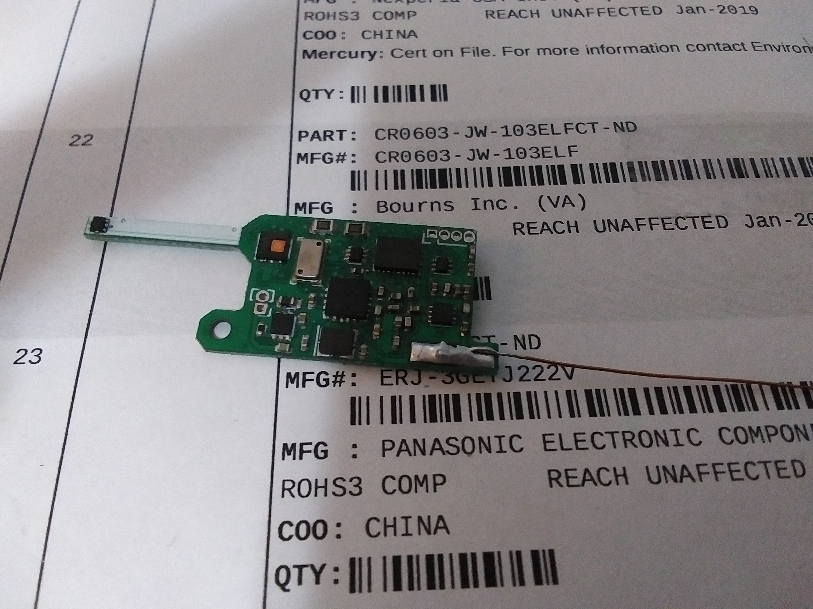
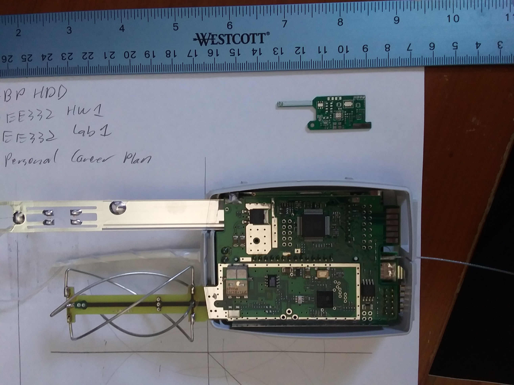

After meeting someone who was studying meteorology, I was fascinated by how dependent weather prediction is on the tiny number of radiosondes launched by the NWS and other services around the world twice each day. I wanted to try building a much smaller version, so I did: \  The lower photo shows one of the radiosonde PCBs next to a Vaisala RS92 for comparison. This radiosonde is tracked using multilateration, and can measure pressure, temperature, and humidity with accuracy comparable to a Vaisala radiosonde. It uses a little transceiver IC to communicate at 433 or 407MHz, and it uses a custom Brokaw bandgap reference temperature sensor to give high accuracy temperature readings from -100 to 50 degrees centigrade, at a very low cost. I tried to reach someone at the NWS to talk about it, but our meeting fell through and in the meantime I convinced myself that this type of radiosonde wasn't the solution - the balloon still has to carry itself, so a large balloon is still required even for a tiny radiosonde. Additionally, this radiosonde is not that much cheaper than a Vaisala radiosonde. If I ever get the chance, I really want to integrate all of the circuitry onto a single IC, which I think would allow the NWS to launch thousands of them per day at only a few cents per launch.